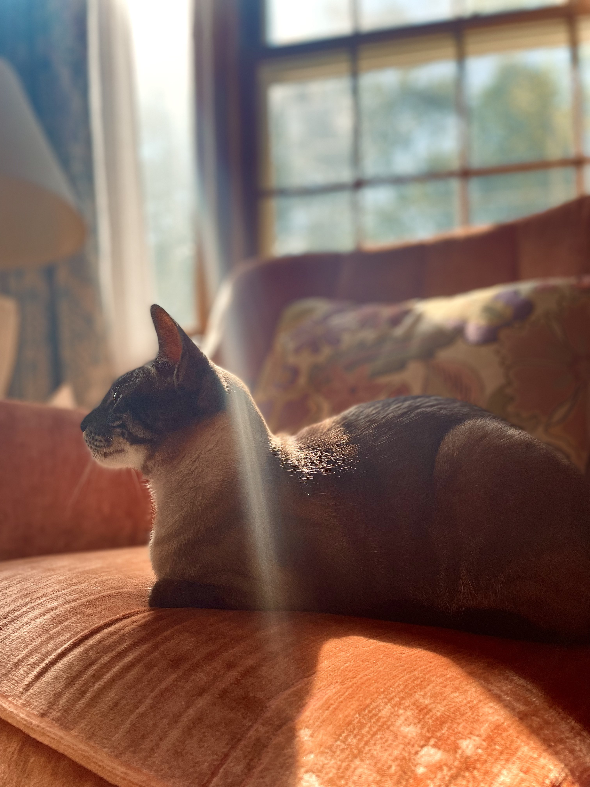

Jackson Porter
porter.j@stu.janesville.k12.wi.us
You know, sometimes all you need is twenty seconds of insane courage. Just literally twenty seconds of just embarrassing bravery. And I promise you, something great will come of it
My name is Jackson, and I'm seventeen years old. I attend Craig Highschool, I am a senior and will be graduating in 2023. I have a cat named Momo, he is a jerk but I love him anyways.
My Favorite Songs/Movies
- Californication by The Red Hot Chili Peppers
- The Mortal Instuments: City of Bones
- Paralysed by Jamie Bower
- Sweeney Todd
- Ticking by Nick Leng
- Avatar 2009
Class Schedule
- Art I A
- PLTW Intro-Engineer Design A
- SWS Senior English
- Web Design
- Senior Social Studies
- Photography
- Computer Programming I EM
- Science Fiction and Fantasy